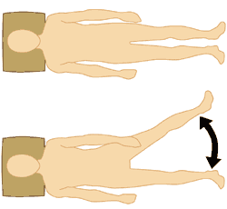

Lying Abduction Supine Position
Position
Lay on your back with both legs stretched out.
Indication
Slide sideways with one leg and keep this leg stretched. Slowly slide this leg back to the first position.
- This exercise improves mobility and strength of the hip. This is of importance for while walking.
